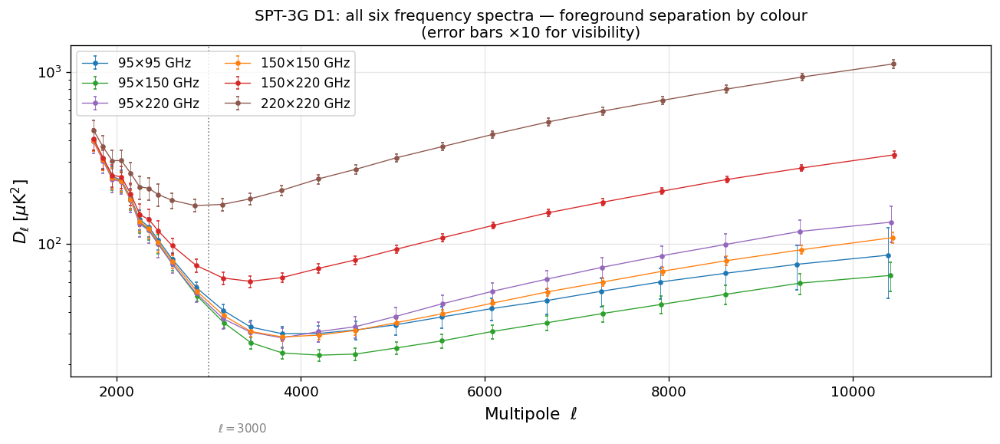

AI-generated notebook — This notebook was created by GitHub Copilot (Claude Sonnet 4.6) from the following prompts:
“read https://lambda.gsfc.nasa.gov/product/spt/spt3g_d1_high_ell_info.html and the relative paper, then create a jupyter notebook based post that loads the spectra and compares them with the latest spectra from planck. cite stuff properly. be didactic. run it using a uv venv. find a way of specifying requirements inside the notebook itself. the most standard way.”
“I look at the band powers. In the original paper, the error bars are a lot larger. They are increased by a factor of 10, do that also here and mention it.”
SPT-3G D1 high-ℓ CMB power spectra vs. Planck 2018
Background
The Cosmic Microwave Background (CMB) temperature anisotropy power spectrum is usually expressed as \(D_\ell = \ell(\ell+1)C_\ell/(2\pi)\) in units of \(\mu\mathrm{K}^2\). It encodes the statistical properties of tiny temperature fluctuations imprinted on the CMB at recombination (\(z \approx 1100\)) and provides our most precise probe of cosmological parameters.
The power spectrum can be divided into two regimes by the physical processes responsible for the signal:
Primary anisotropies (\(\ell \lesssim 2500\))
These arise from density and velocity perturbations in the primordial plasma. The characteristic acoustic peaks at \(\ell \approx 200, 500, 800, \ldots\) are perfectly measured by Planck (Planck Collaboration 2020).
Secondary anisotropies (\(\ell \gtrsim 2000\))
At smaller angular scales, primary CMB fluctuations are exponentially suppressed by Silk damping. A rich variety of physical processes contributes instead:
Effect
Abbreviation
Physical origin
Thermal Sunyaev–Zel’dovich
tSZ
Inverse Compton scattering off hot ICM electrons
Kinematic Sunyaev–Zel’dovich
kSZ
Doppler shift from bulk motions of ionized gas
Cosmic Infrared Background
CIB
Cumulative emission from dusty star-forming galaxies
Radio galaxies
RG
Synchrotron emission from AGN
The tSZ effect has a distinctive frequency spectrum (decreasing below 217 GHz, rising above), which means multi-frequency observations can separate it from the CIB. The kSZ effect has the same frequency spectrum as the CMB and can only be separated statistically.
The SPT-3G D1 data set
The South Pole Telescope (SPT) is a 10-meter microwave telescope at the South Pole, operated by a collaboration led by the University of Chicago. The SPT-3G receiver observes simultaneously at 95, 150, and 220 GHz with ~16,000 detectors.
Chaubal et al. (2026) present the SPT-3G D1 TT high-ℓ power spectra using observations from 2019 and 2020 of the 1646 deg² SPT-3G Main field. The measurements span 1700 ≤ ℓ ≤ 11,000 across six frequency auto- and cross-spectra: 95×95, 95×150, 95×220, 150×150, 150×220, 220×220 GHz.
Citation: Chaubal P. et al. 2026, SPT-3G D1: A Measurement of Secondary Cosmic Microwave Background Anisotropy Power, arXiv:2601.20551. Data hosted at LAMBDA and UChicago SPT site.
In this notebook we:
Download and parse the SPT-3G D1 band powers.
Download the Planck 2018 (PR3) binned TT spectrum.
Compare the two datasets to visualise how SPT-3G extends the CMB power spectrum into the secondary-anisotropy regime.
Requirements
This notebook uses only the standard scientific Python stack. The cell below installs the dependencies with pip (the standard way to declare and install notebook requirements).
To run this notebook in an isolated uv virtual environment:
Each panel shows \(D_\ell\) with \(\pm 1\sigma\) error bars multiplied by 10 (following the convention of Fig. 2 in Chaubal et al. 2026, where uncertainties are inflated by a factor of ten to be visible on a log scale). The colour coding follows frequency: blue → 95 GHz, green → 150 GHz, red → 220 GHz.
Key features to notice:
Declining slope at low ℓ (~2000–3000): residual primary CMB power (the damping tail).
Minimum near ℓ ≈ 3000: tSZ has a null at ~217 GHz and suppresses the 150×150 spectrum, creating a local minimum.
Rising power at high ℓ (>4000): CIB dominates the 220 GHz channels; radio galaxies (flat or rising spectra) appear in lower frequency channels.
Cross-spectra help separate components: the 95×220 cross-spectrum,
for example, is sensitive to the CIB without the noise penalty of a 220×220 auto-spectrum.
Planck’s 143 GHz channel is the closest match to SPT-3G’s 150 GHz band. Although the two instruments use slightly different effective frequencies and source-masking thresholds, the 150×150 SPT-3G spectrum is the most natural counterpart to the Planck TT spectrum for a direct comparison.
The plot below shows:
Grey shaded region (Planck PR3): primary CMB spectrum measured with full-sky coverage and multiple frequencies for foreground separation. Plotted up to ℓ ≈ 2500 where Planck signal-to-noise remains adequate.
Blue curve (Planck best-fit ΛCDM): smooth theoretical prediction continuing into the damping tail.
Orange points (SPT-3G D1 150×150): SPT-3G measurements at 1700 ≤ ℓ ≤ 11,000, showing both the damping tail region and the foreground-dominated regime.
Note on error bars: Following Fig. 2 of Chaubal et al. (2026), all plotted uncertainties are inflated by a factor of 10 to be visible on the logarithmic scale. The actual \(1\sigma\) errors are 10× smaller.
Note the transition near ℓ ≈ 3000–4000: below this range, SPT-3G roughly\(D_\ell\) above the pure-CMB prediction.
follows the Planck best-fit damping tail; above it, foreground power (CIBfrom dusty galaxies, SZ effects) begins to dominate and push the measured
Planck measures up to \(\ell \approx 2500\) and SPT-3G D1 starts at \(\ell = 1700\), giving a ~800-multipole overlap window where both experiments should agree on the primary CMB power.
Any systematic offset between the two would signal calibration differences or residual foreground contamination in one (or both) data sets.
6. Multi-frequency view: foreground separation by frequency
A key advantage of SPT-3G D1 is the simultaneous measurement at three frequencies. The plot below overlays all six spectra on a single panel to illustrate frequency-dependent behaviour:
tSZ imprint: the tSZ effect decreases the temperature at 95 and 150 GHz (relative to the CIB) and has a spectral null at ~217 GHz. The 150×150 spectrum is most suppressed relative to 220×220 near ℓ ≈ 3000.
CIB rise: The CIB has a steep, rising spectrum, making the 220 GHz channels the most CIB-dominated at high ℓ.
Radio galaxies: They appear brightest at 95 GHz and their power remains relatively flat or slightly rising toward low ℓ within the SPT range.
These frequency dependencies allow the SPT-3G collaboration to fit for the individual foreground components and extract, e.g., the tSZ amplitude \(D^{\mathrm{tSZ}}_{3000}\) and kSZ amplitude \(D^{\mathrm{kSZ}}_{3000}\).
fig, ax = plt.subplots(figsize=(11, 5))for name in FREQS: d = spt[name] ax.errorbar( d["ell"], d["Dl"], yerr=10* d["sigmaDl"], fmt="o-", ms=3, lw=0.8, color=palette[name], elinewidth=0.5, capsize=1, label=f"{name} GHz", )# Show where tSZ roughly creates its minimum in the 150×150 spectrumax.axvline(3000, color="grey", ls=":", lw=1)ax.text(3100, 8, r"$\ell = 3000$", fontsize=9, color="grey")ax.set_yscale("log")ax.set_xlabel(r"Multipole $\ell$", fontsize=13)ax.set_ylabel(r"$D_\ell\;[\mu\mathrm{K}^2]$", fontsize=13)ax.set_title("SPT-3G D1: all six frequency spectra — foreground separation by colour\n(error bars ×10 for visibility)", fontsize=12,)ax.set_xlim(1500, 11500)ax.legend(ncol=2, fontsize=10)plt.tight_layout()plt.savefig("spt3g_d1_all_spectra_overlay.png", bbox_inches="tight")plt.show()

7. Key results from the paper
Chaubal et al. (2026) use these spectra to constrain the amplitudes of the secondary signal components. Selected highlights:
Parameter
Value
Notes
\(D^{\mathrm{tSZ}}_{3000}\)
\(4.91 \pm 0.37\;\mu\mathrm{K}^2\)
Thermal SZ at 143 GHz
\(D^{\mathrm{kSZ}}_{3000}\)
\(1.75 \pm 0.86\;\mu\mathrm{K}^2\)
Kinematic SZ
Duration of reionization \(\Delta_{50}z_{\rm re}\)
\(< 3.8\) (95%)
From kSZ
Duration of reionization \(\Delta_{90}z_{\rm re}\)
\(< 6.1\) (95%)
AMBER simulations
The kSZ power provides the most constraining current bounds on the epoch and duration of reionization from the small-scale CMB power spectrum.
8. Summary
This notebook demonstrated how to:
Download and parse the SPT-3G D1 band-power file from the UChicago public data archive and the Planck Legacy Archive (IRSA mirror).
Compare the high-resolution SPT-3G spectra with the Planck 2018 PR3 measurements in the overlap multipole range \(1700 \lesssim \ell \lesssim 2500\).
Visualise the frequency-dependent foreground signatures (tSZ minimum, CIB rise) that allow SPT-3G D1 to separate astrophysical components.
Together, Planck (primary CMB, large scales) and SPT-3G D1 (secondary CMB, small scales) map the CMB temperature power spectrum across nearly four decades in angular scale, from the Sachs–Wolfe plateau at \(\ell \sim 2\) to the Poisson-noise floor of extragalactic sources at \(\ell \sim 10{,}000\).
Planck Collaboration V (2020): Planck 2018 results. V. Power spectra and likelihoods, A&A 641, A5. DOI: https://doi.org/10.1051/0004-6361/201936386. Data: Planck Legacy Archive (IRSA).
Sunyaev & Zel’dovich (1972): The Observations of Relic Radiation as a Test of the Nature of X-Ray Radiation from the Clusters of Galaxies, Comm. Astrophys. Space Phys. 4, 173.